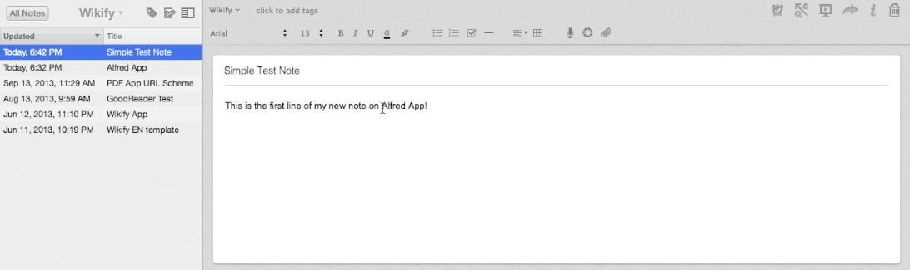
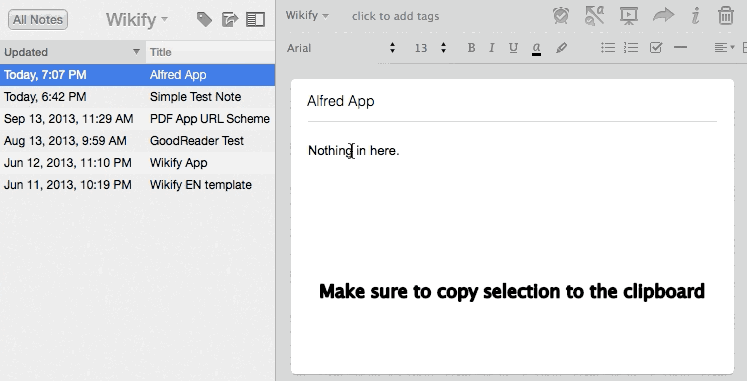

Wikify
GitHub Repo
Version 2.6
Download on Packal
Wikify is a workflow to add some great Markdown and wiki goodness to Evernote. In this post, I want to lay out all of the functionality and how to take advantage of it.
Markdown Functionality
One half of Wikify’s functionality concerns integrating Markdown and Evernote. Essentially, this means being able to send Markdown text to Evernote as HTML and being able to export an Evernote note to a Markdown text file.
In order to export an Evernote note to a Markdown text file, you can use the enmd keyword from Alfred. enmd stands for “Evernote to Markdown”, and this command will take your currently selected Evernote note and create a Markdown formatted text file which will immediately be opened in your default text editor. In addition, enmd will fill in the note’s title, notebook, and tags as metadata at the top of the file (this will make it a snap to edit the note and send it back to Evernote using the mden command, which I will talk about next). The workflow also comes with the ability to bind a keyboard shortcut to this function (I use cmd + shift + 9). No fuss, no hassle, no wait. Export your Evernote note into Markdown in a flash.
But what about getting data into Evernote? Wikify will also allow you to write notes in Markdown in your text editor of choice and then send that text to Evernote, where it will be formatted and displayed in proper HTML. Now, this function has a bit of quirks to it, so let me elaborate. You can launch this function in one of two ways:
- the
mdenkeyword in Alfred - setup a keyboard shortcut
The keyboard shortcut will actually allow you simply to select your text (cmd + a for “Select All”) and then press the shortcut to run the script. Alternatively, you can select the text, copy it to the clipboard, and then pop up Alfred and use the mden command (this is, obviously, short for “Markdown to Evernote”). It is important to note that if you use the mden command from Alfred, your Markdown text must be in the clipboard.
Now, how do you tell mden where to send your note, or what tags it should have, or what it’s title is? In order to assign Note Title, Notebook, and Tags, you can use simple MultiMarkdown Headers, or simple symbols which are placed at the top of the document:
Title:or#for the note’s titleNotebook:or=for the note’s notebook destinationTags:or@for the note’s tags
So, the top of your Markdown text note might look something like this:
1 2 3 | # Text Note Title = My Default Notebook @ tag1, tag2, tag3 |
But, that’s not all that mden can do. I’ve added a few extras to its capabilities. In addition to converting Markdown to text to HTML and sending that to Evernote, mden has three other pretty cool features:
- document-specific text snippets (use
^^^snippet^^^syntax) - auto-linking to pre-existing Evernote notes (no special syntax)
- auto-linking to new Evernote notes (use
[[double bracket]]syntax)
First, let me explain document-specific text snippets. This feature was inspired recently as I was taking notes in class. In-class note-taking is a bit unique, since you won’t exactly know what words will be used repeatedly before the class begins. I’m all about TextExpander, but I can’t set up snippets if I don’t know what will be the key words for that class. Plus, I don’t want to clutter my TextExpander library with these one-off snippets. So, document-specific text snippets was born. The idea is to use snippets in your notes as you type, and then define the snippet:expanded text relationship before you use Wikify to send the notes to Evernote. The syntax is dead-simple. Simply wrap your “snippet dictionary” in triple carets (^^^snippet:expanded text^^^). You can have one-off “dictionaries” or you can make one long dictionary at the end of your document. The only things you need to remember are:
- ALWAYS use ,, as your in-text prefix (you can change this in the code)
- if its a one-off (only one snippet), the “dictionary” needs to exist on its own line
- if its a multi-snippet “dictionary”, use the triple carets like fenced code blocks
To ensure these few easy syntax rules makes sense, here’s an example:
1 2 3 4 5 6 7 8 9 | ,,p are separated by a blank line. ^^^p:Paragraphs^^^ New text. 2nd paragraph. *,,i*, **,,b**, `,,m`. ^^^ i:Italics b:BOLD m:monospace ^^^ |
Thats all there is to it. Note how each snippet is prefixed by ,,. This ensures that both you and the processor know what text needs to be expanded, and you don’t need to have the commas in the snippet dictionary. You can mix and match single-line snippet dictionaries with multi-snippet dictionaries in the same document. You can even use non-ASCII characters in your snippets or in your expanded text. For me, this is a killer feature. I hope someone else finds it useful.
Next, auto-linking to pre-existing Evernote notes. This is really the feature at the heart of Wikify, because this is what allows you to “wikify” your Evernote library. The idea is really quite simple: write your note as you normally would (in this case in Markdown, but I’ll discuss later how this can work within Evernote itself), and Wikify will ensure that anytime you reference any other Evernote note by title, your note will have a hyperlink to that other note. Let me offer a simple example. Say I began a new note like so:
1 2 3 4 5 | # Note Title = Notebook @ tag1, tag2 This is the first line of my new note on Alfred App! |
Now, if I had a note in my Evernote account entitled “Alfred App”, when I process this note to send it to Evernote, Wikify will now catch that and hyperlink to that pre-existing note, so this new note would have the phrase “Alfred App” linked directly to that other Evernote note. No fuss, no hassle, no funky syntax. And (this is what was holding me back on this feature for while), this is SUPER-FAST!
The final feature that “wikifies” Evernote when you are sending Markdown text to Evernote is smoothly creating new spaces to fill with data later, while simultaneously creating the inter-linking between notes. Wikify has you covered here as well. Let’s say as you’re typing up a new Evernote note, you realize that you are discussing an idea, topic, or person that you want to research further, but at some later date. What to do? Well, you can use the standard wiki-syntax of the [[double brackets]] to mark that idea, topic, or person as something you want to create a new note for, while also linking to that new note from within your current note. To return to our sample note above, let’s say you added this:
1 2 3 4 5 | # Note Title = Notebook @ tag1, tag2 This is the first line of my new note on Alfred App! I want to talk more about [[AppleScript]]. |
Whenever you have Wikify process this Markdown text and send it to Evernote, it will first create a new note (in the same notebook as the one specified in the meta-data) entitled “AppleScript”, then embed the Evernote hyperlink to that new note within this current note. This means that your new Evernote note will have 2 links: one to the pre-existing note “Alfred App” and one to the newly created, blank note “AppleScript”. All of this without you having to do anything but type!
For anyone who prefers to write in Markdown, but loves the always-there accessibility of Evernote, this can be a powerful addition to your workflow. But obviously, not everyone writes their Evernote notes in Markdown first. Most people just write their notes directly in Evernote. But what if you wanted to still “wikify” your Evernote library, to easily create these interlinked notes? Well, I’ve tried to solve that problem too.
Wiki Functionality
While I’ve already discussed some of the wiki functionality that’s inherent in the mden function, that isn’t the only way to ensure that all of your Evernote data is intelligently interlinked. I have versions of both the link to pre-existing note and link to new note capabilities detailed above that work purely within Evernote. Here’s how they work.
In order to interlink any of your current Evernote notes with pre-existing notes, you can use the wfy command from Alfred. Simply open up Evernote and select the notes you want to “wikify” (the workflow does accept multiple selections, but you shouldn’t over tax it). Once your notes are selected, pull up Alfred and use the wfy (short for “wikify”) keyword. The workflow will then process each of your notes individually, auto-linking to any pre-existing other notes which it references by name. NOTE: In order to use this feature, you will need the Satimage OSAX Scripting Addition. I’ve set it up such that this is remarkably easy to install. Simply use the keyword in Alfred wfy:install and the Satimage installer will boot up and walk you through the process. It really is as simple as that. The script will search your note’s content for any references to other notes’ titles. If any are found, that text will be replaced with a hyperlink to that note. Here’s a gif that shows the process in action:

Next, let’s say that you are in Evernote and see a phrase or term in one of your notes that you want to research more, while creating the wiki-environment that Wikify is all about. I’ve added a companion feature which will:
- take the currently selected text in the open Evernote note
- create a new note in that notebook whose title is the selected text
- embed a hyperlink back to the original note as the first line of this new note
- and replace the selected text with a hyperlink to that newly created note
This means that you have two-way hyperlinking (which is impossible in the mden version of this functionality) between your current note and your new note. Creating spaces for new thought, while retaining context and wiki-style hyperlinking has never been easier. To use this feature, you can either use a user-specified keyboard shortcut, or copy the selected text to the clipboard and run ensel. Here’s another gif to illustrate:

To sum up, Wikify has 4 main commands:
mdento send Markdown text to Evernoteenmdto export an Evernote note to Markdownwfyto “wikify” the selected Evernote noteenselto create and wikify a new Evernote note from selection
With these features, and all of the “sub-features” elaborated above, I truly believe that Wikify could be a great help to those others out there who love Evernote, Markdown, and Wiki goodness.